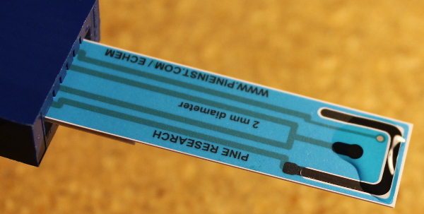
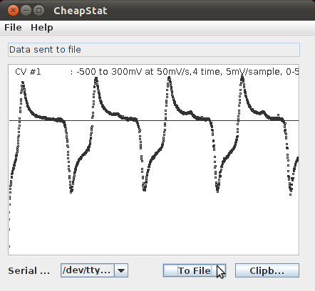
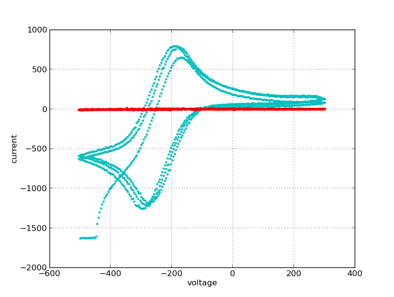

Ruthenium hexamine reversible cyclic voltagram¶
Ruthenium hexamine Ru(NH3)6 is a well-known reversible redox couple.
An example voltammogram of this redox couple is demonstrated in the Pine electrode literature.
Hexaammineruthenium(III) chloride is readily available from Sigma-Aldrich (Cat # 262005). A 250 mg sample size is plenty of material for most experiments. We have repeated this experiment using the CheapStat and a screen printed carbon electrode as described below.
Reagents & Equipment¶
Cyclic voltammetry parameters¶
- Start: -500 mV
- Stop: 300 mV
- Slope: 50 mV/sec
- Sample rate: 3 mV/sample
- Cycles: 3
Method¶
- Prepare a stock solution of 10mM Ru(NH3)6 in 0.1M KCl as follows:
- Add 4 mL of 0.1M KCl to the bottle containing 250mg of 10mM Ru(NH3)6. Mix until dissolved.
- Add 50uL of the 0.2M stock solution to 1mL of 0.1M KCl in a microcentrifuge tube
- Connect the screen printed adapter ver A to the CheapStat and insert a screen printed electrode
- Pipette 50 uL of 0.1M KCl onto the screen printed electrode
- Take a background reading
- Next, pipette 50 uL of 10 mM Ru(NH3)6 onto the screen printed electrode and repeat measurement.

Sample data¶

Background data shown in red¶

- Red = Background (0.1 mM KCl);
- Cyan = 10 mM Ru(NH3)6 in 0.1M KCl.
Footnotes
| [1] | To prepare 500 mL of a 0.1M KCl solution: transfer 33 mL of 3M KCl stock (LabChem Part # LC18795-1) into a 500 mL volumetric flask. Fill to line with distilled or deionized water. Place stopper in flask and invert several times to mix. |
| [2] | Sigma-Aldrich (http://www.sigmaaldrich.com/united-states.html) Part # 262005-250MG Cost $44 + shipping |